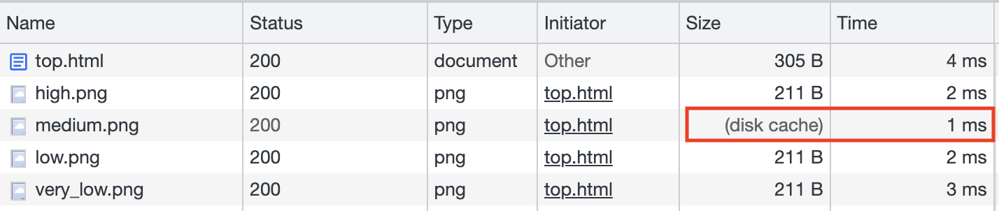
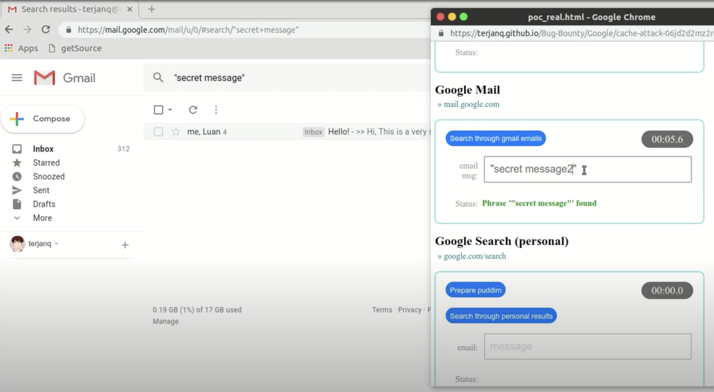

The Most Interesting Frontend Side Channel Attack: XSLeaks (Part 2)
From the last paragraph of the previous post, it can be seen that when XSLeaks is combined with search, it can create a greater impact, and this attack method is called XS-Search.
The reason why it has a greater impact is that search results are generally considered private. Once search results can be inferred through certain means, attackers can obtain sensitive information through the search function. So, what means can be used?
In addition to the methods mentioned in the previous post, this post will discuss a more commonly used method: Cache probing.
Cache Probing
Cache mechanisms are ubiquitous in the world of computer science. In terms of sending requests, you can implement your own cache in JavaScript, where repeated requests are not sent again. Browsers themselves also implement cache mechanisms based on the HTTP specification, and DNS also has caching when it comes to sending requests!
Browsers have DNS caching, operating systems have their own caching, and DNS servers also have their own caching. Caching is everywhere, and even CPUs have cache mechanisms like L1 and L2, trading space for time to speed up execution.
If you remember, the CPU vulnerabilities Spectre and Meltdown mentioned earlier are related to caching. In fact, they are similar to the cache probing technique discussed in this post.
As the name suggests, this technique uses whether something is in the cache to infer the original information.
For example, suppose a website displays a welcome page if the user is logged in, with a welcome.png image on it. If the user is not logged in, they will be redirected to the login page. Once the image is displayed, it will be stored in the browser’s cache.
Since images in the cache load faster, we can detect whether the image is in the cache by measuring the time it takes to load welcome.png. This allows us to determine whether the user is logged in.
Let’s look at a past case to understand it more quickly. In 2020, Securitum discovered a vulnerability while conducting penetration testing on Poland’s App ProteGo Safe: Leaking COVID risk group via XS-Leaks.
During the COVID-19 pandemic, many governments developed their own apps or websites for unified reporting of health conditions, among other things. Poland was no exception, and the government launched the ProteGo Safe website, where people could report their conditions or view the latest information.
Based on the questionnaire for reporting conditions, four results could be obtained:
- High
- Medium
- Low
- Very low
Depending on the result, the page would display different images (such as high.png and medium.png, and so on). For example, the lowest risk would be represented by a symbol indicating safety.
Based on this, the author detected the user’s reported health condition by measuring the time it took to load the image. If loading high.png was the fastest, it meant that the user’s condition was high. The code used for detection is as follows:
<img src="https://example.com/high.png">
<img src="https://example.com/medium.png">
<img src="https://example.com/low.png">
<img src="https://example.com/very_low.png">The loading time of each image can be obtained using performance.getEntries(), which allows us to determine which image loads the fastest.

However, there is a small problem: this trick can only be used once. After opening the website once, all four images will be loaded, and the next time you test, all four will be in the cache and load quickly. Therefore, we need to find a way to clear the cache for the user.
When the browser receives a response with an error status code (4xx and 5xx), it clears the cache. So, how can we make the response for https://example.com/high.png return an error?
The author used a clever technique here. Since this website is hosted on Cloudflare and has the WAF (Web Application Firewall) feature enabled, it automatically blocks certain payloads. For example, the URL https://example.com/high.png?/etc/passwd would be blocked because it contains the suspicious /etc/passwd, resulting in a 403 status code.
Therefore, the author added ?etc/passwd to the page and used the following code:
fetch(url, {
cache: 'reload',
mode: 'no-cors',
referrerPolicy: 'unsafe-url'
})This way, the sent image will have a referrer header containing /etc/passwd, causing the server to block it and return an error, thus clearing the cache.
Expanding on this idea, suppose there is a website where we can report whether we have tested positive for a certain condition, and it also displays different images based on the result. We can use the same technique, relying on XSLeaks to detect whether the person opening the website has tested positive, thereby leaking their personal privacy.
Cache Probing with Error Events
Although determining whether a resource is in the cache based on time is an effective method, it can sometimes be affected by network uncertainties. For example, if the network is extremely fast, it may be difficult to determine which resource is cached when every resource appears to have a response time of 1ms or 2ms.
Therefore, there is another attack technique that combines the method of using <img> to detect whether an image is loaded, as mentioned earlier, with cache probing. Instead of relying on time, it relies on error events to determine if the resource is in the cache.
Let’s assume there is a page called https://app.huli.tw/search?q=abc, which displays different content based on the search result. If something is found, the image https://app.huli.tw/found.png will appear; otherwise, the image will not be present.
First, as in the previous step, we need to clear the cache. There are various methods to choose from, one of which is similar to the cookie bomb method mentioned earlier, where we force the server to return an error by sending a large request, thus clearing the cache in the browser:
// code is modified from https://github.com/xsleaks/xsleaks/wiki/Browser-Side-Channels#cache-and-error-events
let url = 'https://app.huli.tw/found.png';
// this adds a lot characters to the url to make request header huge
history.replaceState(1,1,Array(16e3));
// send request
await fetch(url, {cache: 'reload', mode: 'no-cors'});The second step is to load the target website https://app.huli.tw/search?q=abc. At this point, the page will be displayed based on the search result. As mentioned earlier, if something is found, the image https://app.huli.tw/found.png will appear and be stored in the browser’s cache.
The final step is to make the URL very long and then load the image again:
// code is modified from https://github.com/xsleaks/xsleaks/wiki/Browser-Side-Channels#cache-and-error-events
let url = 'https://app.huli.tw/found.png';
history.replaceState(1,1,Array(16e3));
let img = new Image();
img.src = url;
try {
await new Promise((r, e)=>{img.onerror=e;img.onload=r;});
alert('Resource was cached'); // Otherwise it would have errored out
} catch(e) {
alert('Resource was not cached'); // Otherwise it would have loaded
}If the image is not in the cache, the browser will send a request to fetch it. This will encounter the same situation as in the first step, where the server returns an error due to the header being too long, triggering the onerror event.
On the other hand, if the image is in the cache, the browser will directly use the cached image without sending a request. After loading the image from the cache, the onload event will be triggered.
In this way, we can eliminate the unstable factor of time and use cache plus error events to perform XSLeaks.
Real-world Example of Google XS-Search
Let’s take a look at a real-world case where this technique was applied.
In 2019, terjanq discovered an XS-Search vulnerability in various Google products and wrote an article titled Massive XS-Search over multiple Google products. The technical details can be found in Mass XS-Search using Cache Attack. The affected products include:
- My Activity
- Gmail
- Google Search
- Google Books
- Google Bookmarks
- Google Keep
- Google Contacts
- YouTube
Through these XS-Search attack techniques, an attacker can obtain information such as:
- Search history
- Watched videos
- Email content
- Private notes
- Web pages bookmarked
The original article listed many more examples, but I have highlighted a few of the more severe ones here.
Taking Gmail as an example, it provides an “Advanced Search” feature similar to Google Search, where you can specify search conditions using filters. The URL of this search feature can also be copied and pasted, directly opening the search page.
If the search is successful, a specific icon will appear: https://www.gstatic.com/images/icons/material/system/1x/chevron_left_black_20dp.png
At this point, we can use the technique mentioned earlier to detect whether a specific keyword exists in a search (screenshot from the PoC video):

Since email is a place where a lot of sensitive information is stored, for example, some poorly implemented websites may directly send plaintext passwords to users. This technique can be used to gradually leak the password.
For example, if the email format is like this: “Your password is 12345, please keep it safe,” we can search sequentially:
- Your password is 1
- Your password is 2
- Your password is 3
- …
By doing this, we can reveal the first character of the password. After leaking it, we continue the search:
- Your password is 11
- Your password is 12
- Your password is 13
- …
It can leak the second character, and by continuously trying, the complete password can be leaked.
However, although it is technically feasible, executing this attack is more difficult. After all, leaking takes time and opens a suspicious new window. To prevent users from noticing, social engineering techniques are relied upon.
From terjanq’s experiment, it can be seen that XSLeaks using cache can be executed on many products, and it is feasible. Besides Google, there should be many other websites that can leak information using similar methods. Many websites will be affected.
Vulnerabilities like this, which affect many websites and are not considered website-specific issues, are usually handled by browsers.
Cache Partitioning
The previous exploitation methods were based on the assumption that “the cache of all websites is shared,” in other words, if this assumption can be broken, this attack method becomes ineffective.
Therefore, Chrome introduced a new mechanism in 2020: cache partitioning. Previously, the cache was shared by each website, and the cache key was the URL, which allowed XSLeaks to exploit the cache’s existence to leak information.
With the introduction of cache partitioning, the cache key has changed. It is now a tuple consisting of the following three values:
- Top-level site
- Current-frame site
- Resource URL
In the example of the previous attack mentioned, suppose the image https://app.huli.tw/found.png is loaded from https://app.huli.tw/search?q=abc. The cache key would be:
{kind=link}
And if the image https://app.huli.tw/found.png is loaded from another page https://localhost:5555/exploit.html, the cache key would be:
Before cache partitioning, the cache key only had the third value, so in these two cases, they would share the same cache. However, with cache partitioning, all three values must be the same for the cache to be accessed. These two cases have clearly different keys, so they will use different caches.
Because different caches are used, attackers cannot execute cache probing attacks from other pages to detect the existence of the cache.
This implementation of cache partitioning also has some impact on normal websites. One example is the shared CDN. Some websites, such as cdnjs, host many JavaScript libraries for free, making it easy for websites to load them:
<script
src="https://cdnjs.cloudflare.com/ajax/libs/jquery/3.5.1/jquery.min.js"
integrity="sha512-bLT0Qm9VnAYZDflyKcBaQ2gg0hSYNQrJ8RilYldYQ1FxQYoCLtUjuuRuZo+fjqhx/qtq/1itJ0C2ejDxltZVFg=="
crossorigin="anonymous"
></script>One of its main selling points is faster loading speed, thanks to caching. Suppose many websites use the cdn.js service. If you have loaded this file on website A, it will not be loaded again on website B.
However, with cache partitioning, this is no longer possible because website A and website B will have different keys, so the file will still be loaded again.
Finally, it is worth mentioning that cache partitioning primarily depends on the “site” rather than the “origin.” So, if you are in a same-site situation, cache partitioning does not make a difference.
In the example mentioned earlier, what if the attack is launched not from http://localhost:5555 but from https://test.huli.tw? The cache key would be:
It is the same as loading the image from https://app.huli.tw/search?q=abc, so the cache probing attack can still be executed.
In addition, headless Chrome does not have cache partitioning enabled by default. So, if you use Puppeteer with headless mode to access websites, they will still share the same cache key.
More XSLeaks
Due to space limitations, I have only introduced a few methods of XSLeaks. In fact, there are many other techniques.
In addition to referring to the XS-Leaks Wiki knowledge base, there was a paper published in 2021 titled “XSinator.com: From a Formal Model to the Automatic Evaluation of Cross-Site Leaks in Web Browsers” that discovered many new XSLeaks methods using automated techniques.
They also provide a website that explains which browser versions are affected: https://xsinator.com/
There are a total of five categories of things that can be leaked:
- Status code
- Redirects
- API usage
- Page Content
- HTTP header
Each of these categories has its own specific methods to achieve the leaks.
For example, in the category of redirects, there is a method called “Max Redirect Leak” that utilizes the maximum number of redirects allowed to detect if a webpage is performing server-side redirects.
The principle is as follows: in the fetch specification, there is a limit on the number of redirects for a response:
If request’s redirect count is 20, then return a network error.
Therefore, assuming our target to test is http://target.com/test, we first create an API on our own server that redirects 19 times, with the final redirect leading to http://target.com/test.
If the response from http://target.com/test is a redirect, it will trigger the maximum limit of 20 redirects and throw a network error. If it is not a redirect, then nothing happens.
By checking if an error occurs during the execution of fetch(), we can determine if http://target.com/test is being redirected.
The xsinator website contains many interesting XSLeaks techniques. If you are interested, you can take a look.
Conclusion
In this article, we continue to discuss XSLeaks, which we mentioned in the previous article, and introduce the attack method of using cache as a leak oracle. This is a common practice in the world of side-channel attacks. In addition, we provide some real-world examples to show the impact of applying XSLeaks to real-world websites. For example, the example from Google demonstrates that combining XSLeaks with search functionality can create even greater impact than imagined.
XSLeaks is my favorite topic in frontend security. If I were to write about it seriously, I could easily write a complete series of articles for 30 days because there are truly many different ways to use XSLeaks. Some attack methods even utilize lower-level components, making the attacks more challenging and requiring more prerequisite knowledge.
Although XSLeaks, as an indirect attack method, may not have the same level of impact as direct XSS attacks, it is still quite fascinating.